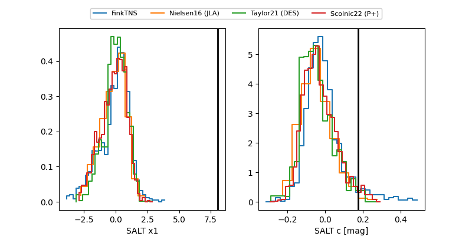

FINK: ZTF25abmvftr
Lasair: ZTF25abmvftr
ALeRCE: ZTF25abmvftr
TNS: 2025wxd
YSE: 2025wxd
ZTF25abmvftr (ztf,fink)
2025wxd (tns,yse)
equatorial (ra, dec) = (332.2038,+31.93586)
galactic (l, b) = (87.0513,-19.37706)

last ztfg=20.12, ztfr=20.05
6 ztfg, 4 ztfr detections